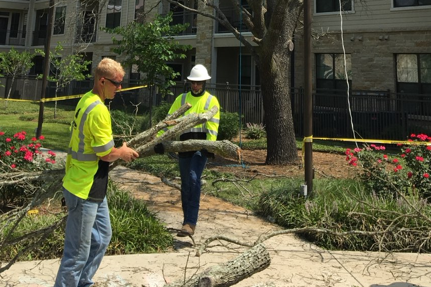

Tree Trimming Services in Leander, TX
Leander's Hill Country landscape is characterized by native trees including live oaks, cedar elms, and the ubiquitous Ashe juniper (cedar) that defines the region. Leander's Hill Country terrain features rocky limestone soil and cedar-heavy landscapes that require specialized lawn care knowledge and equipment. As Leander's population has surged to 75,000+, the need for professional tree trimming has grown alongside it. Cathey's Lawn Care serves Leander neighborhoods including Crystal Falls, Travisso, Mason Hills, Bryson, Summerlyn, Reagan's Overlook, Sarita Valley, Block House Creek with expert trimming services that keep your trees healthy, safe, and beautifully shaped.
Professional Tree Trimming Techniques in Leander
Our team employs proven arboricultural techniques including crown cleaning (removing dead, diseased, or crossing branches), crown thinning (selectively removing interior branches to improve air circulation and light penetration), crown raising (removing lower branches for clearance), and crown reduction (reducing the overall size while maintaining natural form). We never top trees — a harmful practice that weakens tree structure and invites disease. Instead, we use proper pruning cuts that promote natural healing and healthy regrowth.
For Leander properties specifically, this is especially important given the local conditions. Leander's Hill Country terrain features rocky limestone soil and cedar-heavy landscapes that require specialized lawn care knowledge and equipment. Our team at Cathey's Lawn Care adapts our tree trimming techniques to account for the specific challenges that Leander homeowners face, ensuring optimal results on every property we service throughout Williamson County.

When to Trim Your Trees
In Central Texas, the best time for most tree trimming is during late winter or early spring, before new growth begins. However, dead or hazardous branches should be removed immediately regardless of season. Oak trees require special attention — to prevent the spread of oak wilt, a devastating fungal disease prevalent in the Austin area, we follow strict protocols and avoid pruning oaks during the high-risk period from February through June. We seal all oak pruning wounds immediately with wound dressing to prevent beetle transmission.
When serving Leander properties, our crew pays particular attention to the conditions unique to this Williamson County community. Whether we're working on a property in Crystal Falls, Travisso, Mason Hills, or any other Leander neighborhood, we bring the same level of professionalism, attention to detail, and commitment to excellence that has made Cathey's Lawn Care the top-rated tree trimming provider in the area.
Trees We Service
Central Texas is home to a diverse array of tree species, and our team has experience working with all of them. We regularly trim and maintain live oaks, red oaks, post oaks, cedar elms, pecan trees, crepe myrtles, mountain laurels, bald cypress, Texas ash, and many more. Whether you have a single ornamental tree that needs shaping or an entire property full of mature oaks that need professional attention, Cathey's Lawn Care has the skills and equipment to handle the job safely and effectively.
Benefits of Professional Tree Trimming in Leander
Understanding Leander's Climate and Its Impact on Your Landscape
Leander's Hill Country geography creates a landscape environment distinct from the Austin metro flatlands. Leander's Hill Country terrain features rocky limestone soil and cedar-heavy landscapes that require specialized lawn care knowledge and equipment. The rocky limestone substrate means soil depths vary dramatically across properties, affecting root development and water retention. Cedar (Ashe juniper) pollen is a particular concern in winter months, and the trees themselves compete aggressively with ornamental plantings for water and nutrients. Summer heat is every bit as intense as Austin proper, and the higher elevation of many Leander neighborhoods means greater wind exposure. Cathey's Lawn Care has the equipment and expertise to handle these Hill Country-specific challenges, delivering tree trimming results that account for Leander's unique terrain.
Why Leander Homeowners Choose Cathey's Lawn Care
Leander's transformation from a small bedroom community to a thriving city of 75,000+ has been nothing short of remarkable. As one of the fastest-growing cities in Texas, Leander's new developments and established neighborhoods alike need professional lawn care to maintain their property values. For homeowners in this rapidly growing Williamson County community, finding reliable tree trimming services can be challenging as demand often outpaces supply. Cathey's Lawn Care has been serving Leander since the community's growth began accelerating, and we've grown alongside it. Leander's Hill Country terrain features rocky limestone soil and cedar-heavy landscapes that require specialized lawn care knowledge and equipment. Our team has the specialized equipment and knowledge to handle Leander's unique terrain, and we've earned the trust of homeowners in neighborhoods like Crystal Falls, Travisso, Mason Hills, Bryson, Summerlyn, Reagan's Overlook, Sarita Valley, Block House Creek through consistent, quality work. When you choose Cathey's Lawn Care for your Leander property, you're choosing a team that knows this community inside and out.
We proudly serve Crystal Falls, Travisso, Mason Hills, Bryson, Summerlyn, Reagan's Overlook, Sarita Valley, Block House Creek and all surrounding neighborhoods in Leander. No matter where your property is located in the Leander area, Cathey's Lawn Care can provide the professional tree trimming services you need to keep your landscape looking its best. Call us today at (512) 413-8455 for a free, no-obligation estimate.
Tree Trimming Service Areas Near Leander
In addition to Leander, we provide professional tree trimming services throughout the Greater Austin area: